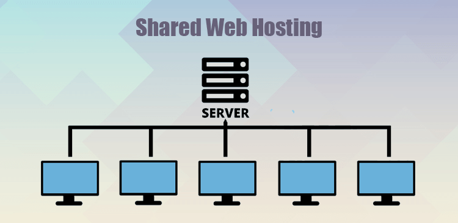

Definisi Hosting
Web Hosting adalah layanan yang menyediakan ruang di server untuk menyimpan semua file (HTML, CSS, JavaScript, gambar, dll.) yang membentuk sebuah website.
Bayangkan jika Nama Domain (`google.com`) adalah alamat rumah, maka Hosting adalah lahan atau tanah tempat rumah (website) itu berdiri. Tanpa hosting, kamu punya alamat tapi tidak punya tempat untuk menaruh isi website-mu.
Server hosting adalah komputer fisik yang sangat kuat yang berjalan 24/7, terhubung ke internet dengan kecepatan tinggi, dan dikonfigurasi khusus untuk "menyajikan" (serve) file website kepada siapa saja yang memintanya.
Bagaimana Cara Kerjanya?
Setelah browser mendapatkan alamat IP dari DNS, hosting mengambil alih:
- Browser mengirimkan permintaan HTTP ke alamat IP tersebut, yang mengarah ke server hosting spesifik.
- Server hosting menerima permintaan itu (misalnya, "minta file `index.html`").
- Server mencari file tersebut di dalam penyimpanannya (hard drive).
- Setelah ditemukan, server mengirimkan file-file tersebut kembali ke browser-mu melintasi internet sebagai "Respon HTTP".
- Browser-mu menerima file-file itu dan me-render-nya menjadi halaman web yang kamu lihat (seperti yang kita bahas di halaman 'Browser').